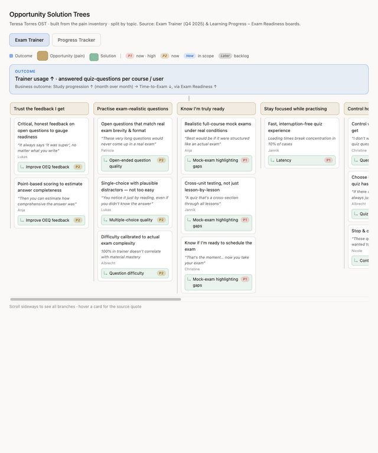
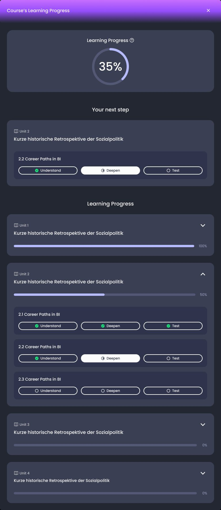
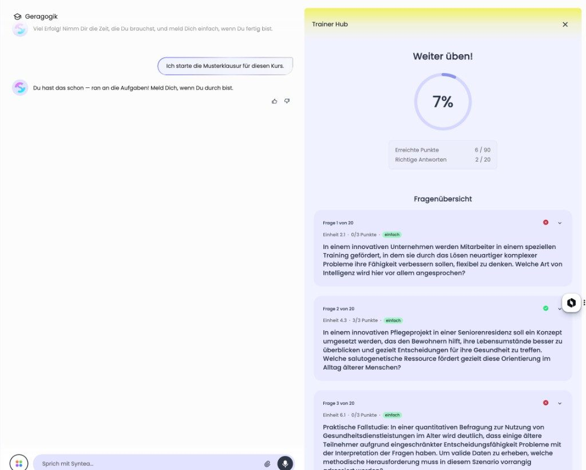

IU International University · Syntea · 2025 – 2026 · UX Lead
Exam readiness: giving students a signal they can trust
The practice tool told students they were ready, then the real exam looked different. The progress view showed how much they had read, which they openly said means nothing.

The problem
For the people using it
“36% is just because 36% was read. Not because the person is ready.” Students delay exams because they have no honest sense of how prepared they are, or over-study long past the point where they could pass.
For the business
Time to exam is a key result for the year. Two features were shipping fixes in parallel, each with its own definition of done, without a shared view of what students actually needed.
Project detail
How I worked
Synthesise before you prioritise
About 40 student interviews over two quarters, mapped theme by theme to what the team was already doing, with reach per theme. The map became the shared reference for the quarter: product, UX and engineering argued from the same page.

Change what progress means
Progress moved from “pages read” to three learning phases: understand, deepen, test. Before rollout I reviewed the build for hierarchy, copy against the university’s tone, and accessibility (eight findings, five of them high).

Define readiness as advice, not a gate
The brief for a readiness signal set one rule: a recommendation, never a constraint. Four stages with explicit thresholds, targets per student type, grounded in 16,902 course journeys and a qualitative study with 17 students.
Ask for feedback where students are
Instead of a form, a short conversation inside the product after rollout: three quick reactions, branching follow-ups, and an invitation to an interview. Positive and negative signals stay separate so the data stays useful.
Test the practice tool against the real thing
Cycle quiz and mock exam side by side, desktop and mobile: 13 findings, 8 tickets, one week, with the product calls escalated rather than decided in a ticket.

What it changed
What I took from it
Evidence rarely tells a team something new. It sharpens a goal they already had and makes it harder to postpone.